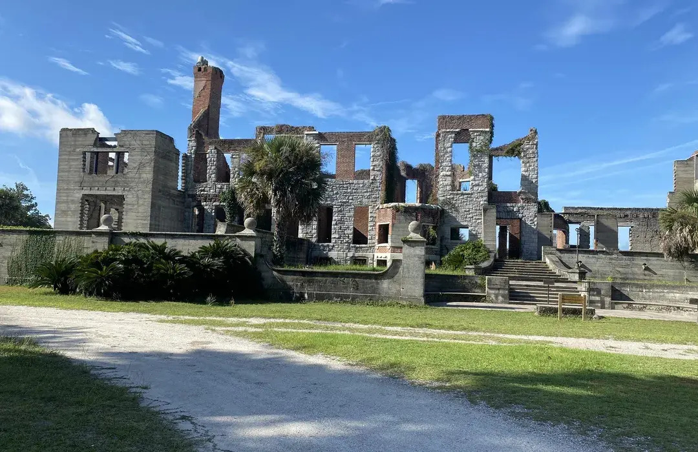
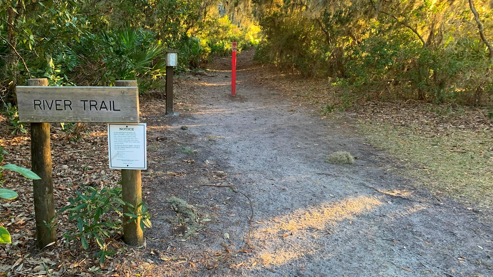
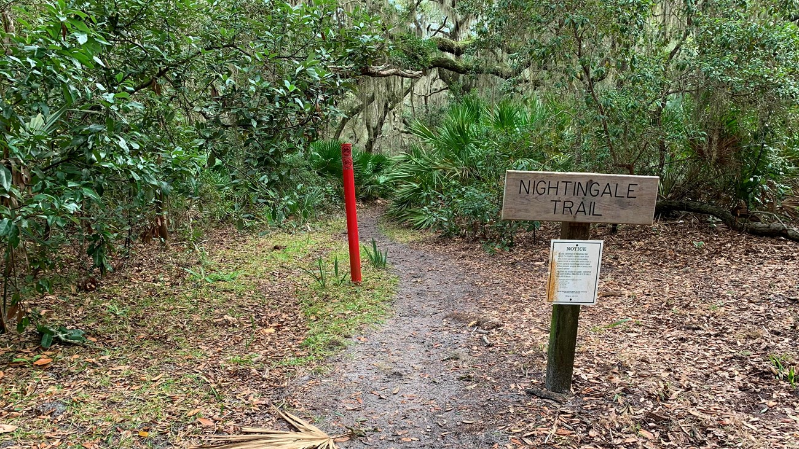

Historic Trails
Explore the island's rich history through these carefully maintained trails.
- Dungeness Historic District
- Plum Orchard Mansion
- First African Baptist Church
Nature Trails
Immerse yourself in the island's diverse ecosystems and wildlife.
- River Trail
- Nightingale Trail
- Parallel Trail
Beach Access
Experience the pristine beaches and coastal beauty of Cumberland Island.
- Sea Camp Beach
- Stafford Beach
- Brickhill Bluff

Dungeness Historic District
Explore the ruins of the Carnegie family's winter home and surrounding historic structures.
Historic
Easy

River Trail
A scenic trail along the marsh edge offering excellent wildlife viewing opportunities.
Nature
Moderate

Nightingale Trail
A peaceful trail through maritime forest leading to beautiful beach access.
Nature
Easy
Trail Safety Tips
- Stay on marked trails to protect fragile ecosystems
- Bring plenty of water and snacks
- Wear appropriate footwear and clothing
- Be aware of wildlife and maintain safe distances